Console Arcs Steam Library Tutorial - Windows¶
Prepare Game Art¶
- Download and unzip this archive before getting started.
Add Console Arcs to Steam¶
First things first - let's add the Console Arcs to your Steam library.
Open Steam Library¶
- Open Steam and select Library > Home at the top of the program window.
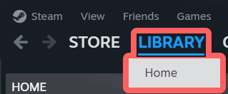
Add Non-Steam Game¶
- At the top of the Steam window, select Games > Add a Non-Steam Game to My Library... to open a new window.
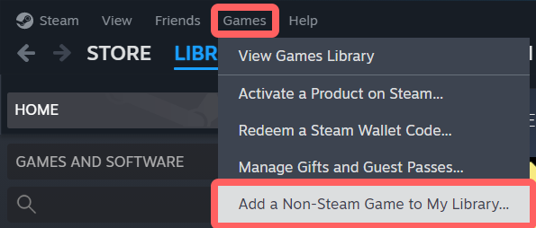
- In the Add Non-Steam Game window, select Browse... at the bottom.
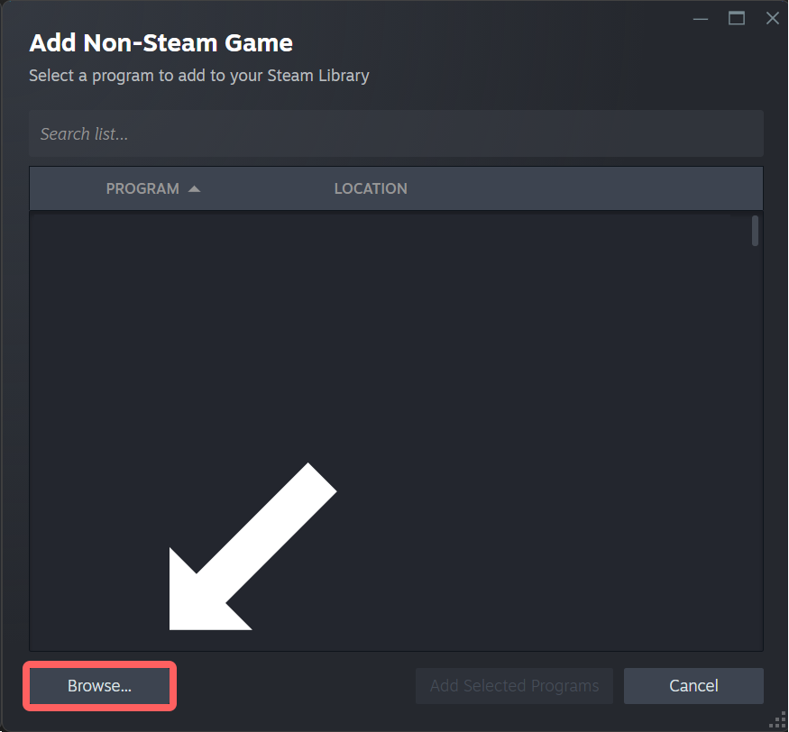
- Navigate to your Console Arcs game executable and select Open.
- The executable will be named HigurashiEp04.exe and will have Natsumi's face on it.
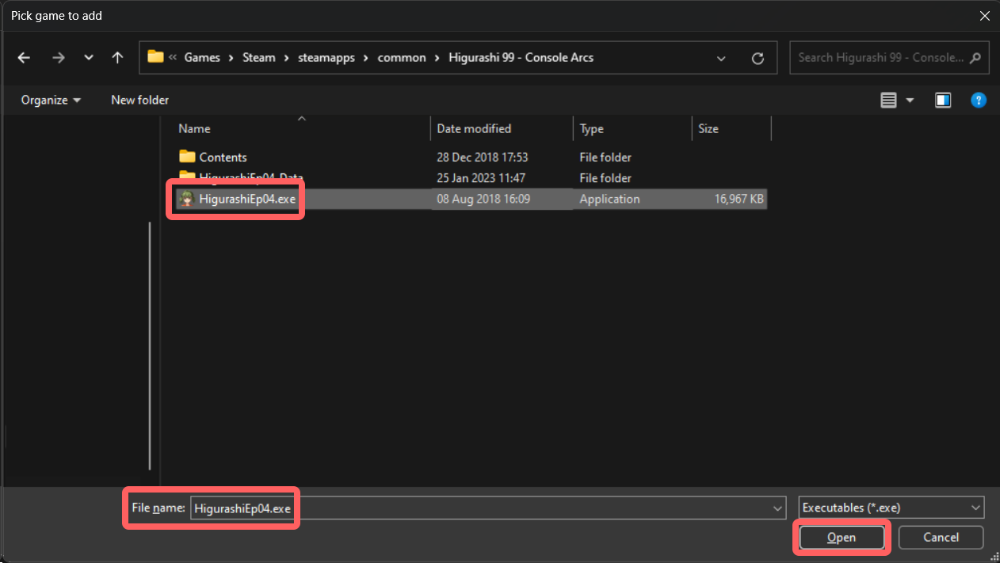
- Make sure HigurashiEp04 is checked in the Add Non-Steam Game window, then select Add Selected Programs in the bottom-right.
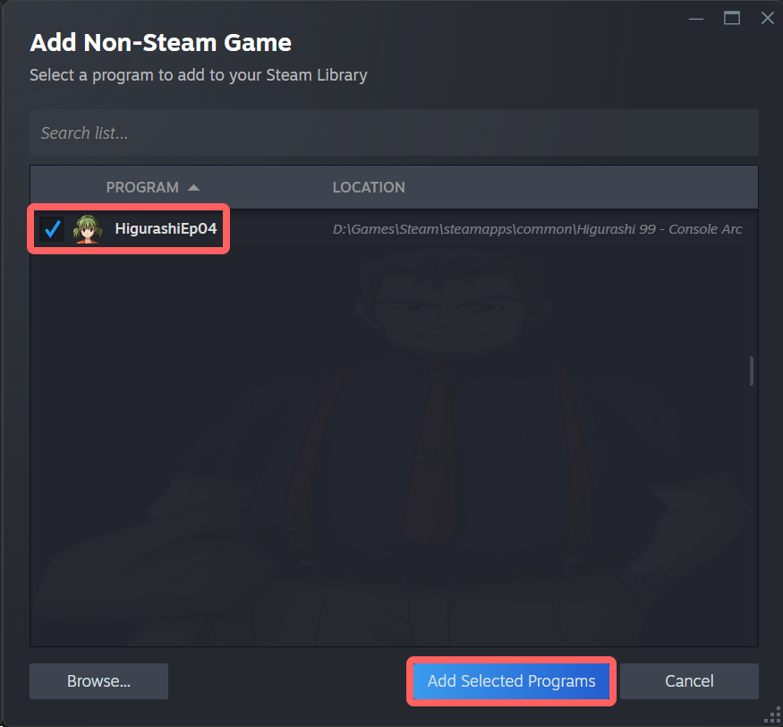
You should now have a new entry for HigurashiEp04 in your Steam library in the Uncategorized section.
If you cannot find it, use the search bar at the top of the games list to find it (this will be useful later in the tutorial).
Change Game Name¶
Let's rename the game in your library to something nicer than "HigurashiEp04."
Open Game Properties¶
-
Select HigurashiEp04 in your Steam library to open it in the main window.
-
On the right side of the window, select the gear icon, then Properties... to open a new window.
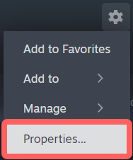
Rename Game¶
- In the Properties > Shortcut window, use the box at the top to rename the game to Higurashi When They Cry - Console Arcs.
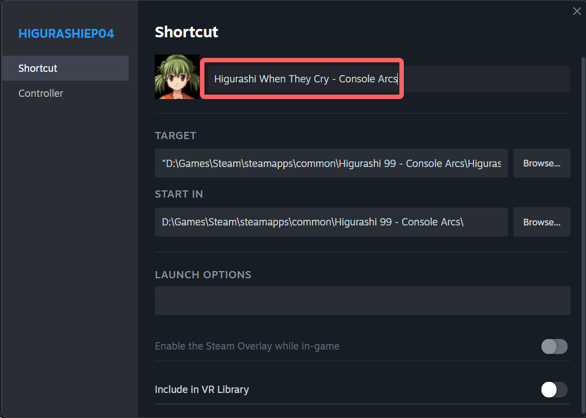
!!! info "Note" You can use the name Higurashi When They Cry Sui instead if you like - this was the name of the console release on PS3/Vita.
- Close the Properties window.
Add Game Art¶
Now that the Console Arcs are in your Steam library, let's add their banner and cover art to match the other 07th-Mod titles.
Add Banner / Logo¶
- On the left side of your Steam library, select the Console Arcs, if not already selected
- Right-click the empty banner at the top of the Steam window and select Set Custom Background.
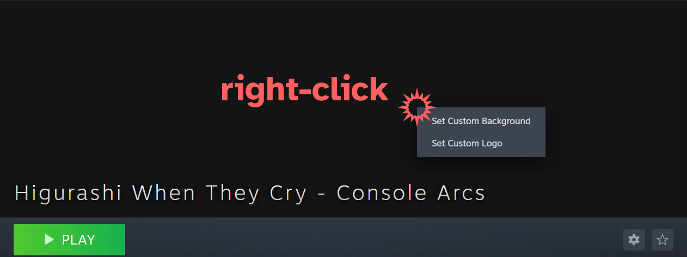
- Select and open banner.jpg in the art archive you downloaded earlier.
- Right-click the (no longer empty) banner again and select Set Custom Logo.
- Select and open logo.png in the art archive.
Your game banner should now be updated - let's do the covers next.
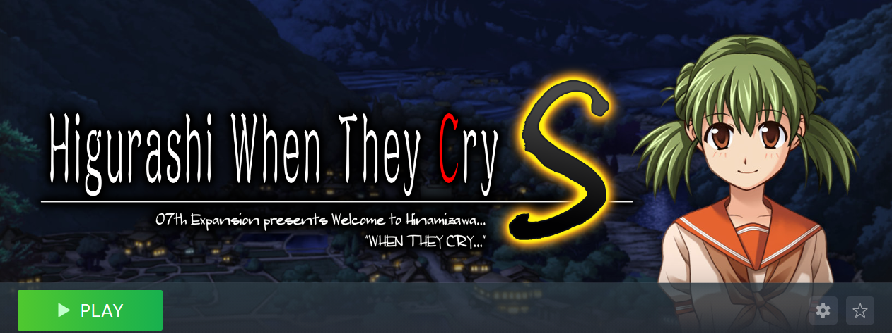
Add Covers¶
Hey, listen!
This part is a bit trickier, so make sure to read the instructions carefully.
Add Small Cover¶
- On the left side of your Steam library, select the Uncategorized category that contains the Console Arcs.
- Don't select the game itself, select the category containing it.
You should now see all of your uncategorized games as posters in your library. * Locate the Higurashi When They Cry - Console Arcs game.
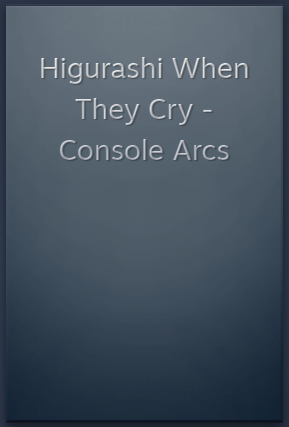
- Right-click the Console Arcs game and select Manage > Set custom artwork.
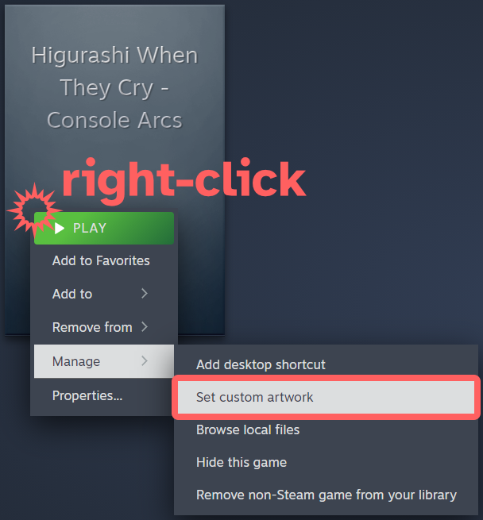
- Select and open cover_small.jpg in the art archive.
The game cover should now be updated - one more to go.
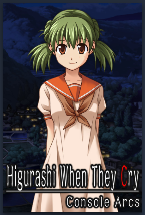
Add Large Cover¶
- Launch the Console Arcs game once - close it once you reach the main menu.
- In Steam, select Library > Home at the top of the window.
In your Recent Games shelf, you should see the Console Arcs game with an empty cover.
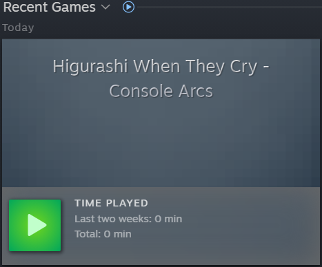
Missing Recent Games Shelf
If you don't have a Recent Games shelf, select + ADD SHELF and set Choose a shelf to Recent Games.
- Right-click the Console Arcs game and select Manage > Set custom artwork.
- Select and open cover_large.jpg in the art archive.
The game cover should now be updated - and you're all done!
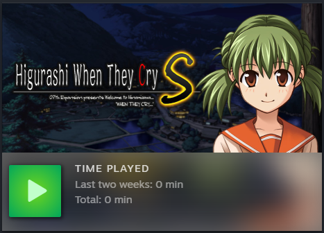